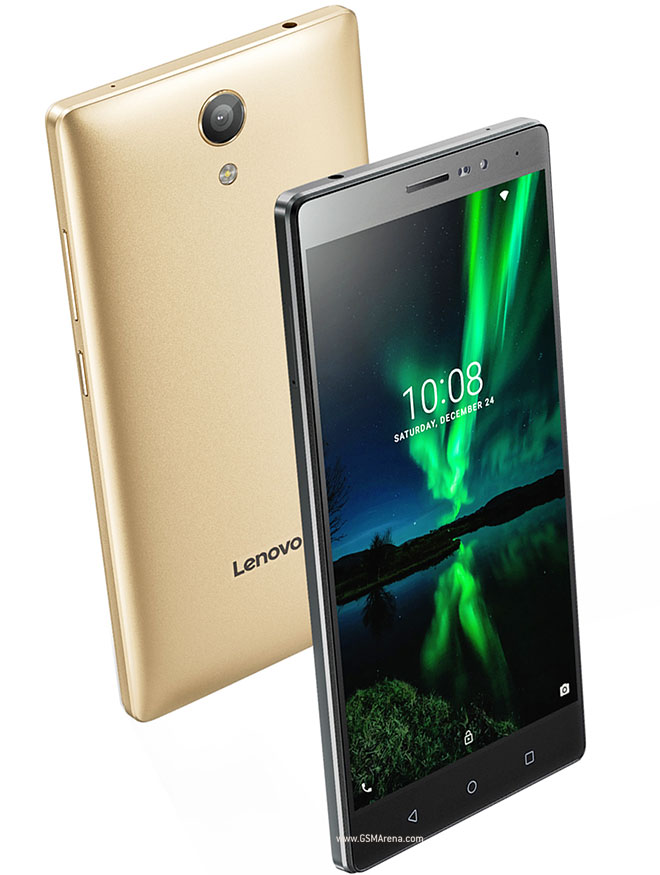
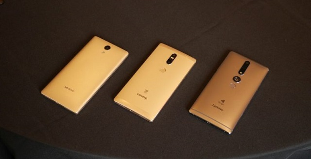
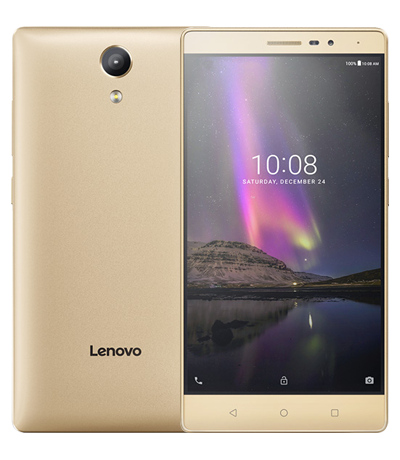

Lenovo Phab 2 lại có kích thước khá nặng cho người dùng cảm giác cầm nắm chắc chắn và cứng cáp. Máy được thiết kế từ nhôm, mặt lưng được bo cong về các cạnh cho máy ôm tay hơn khi sử dụng.
Về phần màn hình khi máy sở hữu kích thước khá lớn 6.4 inch cùng độ phân giải 1280 x 720 pixels trên tấm nền IPS cho hình ảnh rõ nét.
Về phần cấu hình khi máy thật sự không nổi bật khi chỉ trang bị chip thế hệ cũ 4 nhân của hãng MediaTek MT 8735, xung nhịp 1.3 GHz.
Với nhận diện khuôn mặt, quét mống mặt, cảm biến vân tay cùng nền tảng Knox, bộ đôi Galaxy S8 và Note8 đã là những smartphone có tính năng bảo mật đa dạng và tốt nhất trong năm 2017. Nhưng có thể, tính năng và mức độ bảo mật trên Galaxy S9 còn cao hơn thế, không chỉ an toàn mà có thể còn đem lại trải nghiệm tiện dụng hơn nữa.
